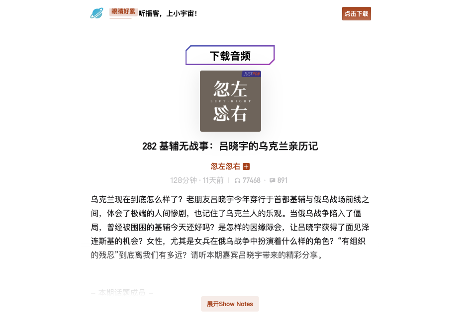

小宇宙下载助手
安装
- 可访问 Chrome 商店：在“ Chrome 应用商店”中搜索“小宇宙下载助手” -> “添加到 Chrome ”
- 无法访问 Chrome 商店：
- 下载 CRX 文件：百度网盘
- 在 Chrome 中，打开右上角选项 - 扩展程序 - 管理扩展程序
- 在扩展程序页面，右上角，打开“开发者模式（Developer Mode）”
- 把下载的 CRX 文件，直接拖拽到这个页面，提示是否添加插件，确定
使用
- 在小宇宙 App 中打开节目
- 右上角分享按钮 - “复制链接”
- 通过 微信传输/ AirDrop /浏览器跨设备同步 等方式中的一种，在电脑端的 Chrome 上打开这个链接
- 播客 Logo 正上方，会多出一个“下载音频”按钮
